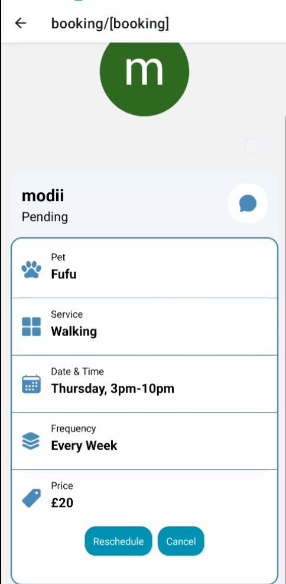
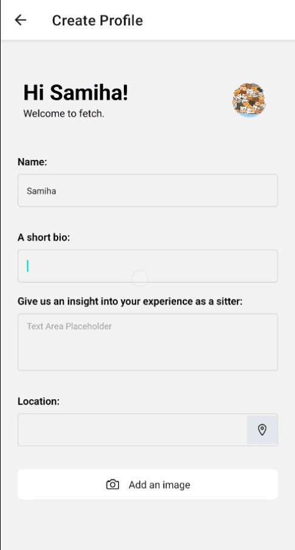

Computer science sixth form project
To view images in larger format, please click on them
For my computer science course at sixth form I was required to create an application. For this I used Visual Studio's Windows Forms as it allowed me to easily create programs with precreated items like buttons and list boxes. My idea for this project was to create a study application that focused on physics to help students learn the subjects better. The application would have many features such as flashcards, quizzes and a login system to store the users data.
Here are some of the screenshots from the program:

The first image is of the main menu page, this is what the user will see after they log onto the application, the buttons all lead to different features of the web application.

The next image is of the main login/signup screen. The user enters their credentials to create a new account for the study app and the data is stored externally. When the User enters their login details afterwards the program would check the external spreadsheet and let the user in if all was well.
You can view the pdf of my full documentation for the computer science project here: Link to pdf The full documentation contains all parts of the working application, my initial goals and what I achieved later on, it also has the all the code written within the appendix at the end.
Honestly, this project was my first foray into large scale coding and projects related to computer science. Developing this taught me alot about documentation and the importance of setting your success criteria and goals. I learned alot about not overestimating my abilities and how to accept failure and how to work around it.
EPQ fitness application
During my time at Luton sixth form I took part in doing an extended project which would give me a grade and is generally thought of as half an A level. When I thought of what I wanted to do for my EPQ I thought of developing another application similar to the Computer science project that I was doing at the time. Since I was finishing off the project and near the end I believed that it would be fine to do something similar but in a smaller scale.
Inspiration struck me when I saw a close family member of mine exercising in an effort to lose weight, I thought of creating an application to help with losing weight. This was quite difficult than I originally planned it to be since I lacked knowledge on fitness and wellbeing. This meant I had to heavily research such topics.
Like before I have attatched some images and annotations of my application:

The image above is of the calendar feature of the application. The calendar was quite difficult to implement and used programming concepts that I had not learned yet. Therefore, I used resources such as Youtube videos to create this.

This image is taken from the pdf that I will link below, It shows a few sections of the program with some annotations.
You can view the pdf of my EPQ here: Link to pdf The full documentation contains all parts of the working application, my initial goals and what I achieved later on, it also has the all the code written within the appendix at the end.
From the EPQ I learned quite alot, such as to not take on projects without proper research. Even though I looked through many articles on Fitness and wellbeing, I was still sorely inadequate in knowledge of this topic. This affected my work as creating some features became difficult like the diet advice section. I learned from this endeavor that research is integral to creating applications on topics that you dont know as much on.
Semester 1 pet game
For my Semester 1 procedural programming module I was required to do a coding project where I had to create a game using procedural programming style with the coding language Java. For the project I was given a few options to create and the one I went with was a Pet game where the User takes care of a virtual pet, similar to Tamagotchi. I was given levels where each level had set requirements such as have input output for level 1 and lvel 8 would be to have file input and output.
I have played many Pet games and am in love with the Tamagotchi series so I was pretty passionant about creating a pet program simulator. I had many ideas already in my head that I wanted to implement. Unlike my other two projects that were done in Windows Forms, this mini project was created using jupyter hub and there were not any buttons to push but the whole program worked like a console app.
Below I have attatched screenshots of the working program and what the output looks like:


Both screenshots are taken in different parts of the gameplay, the first is the intoduction The user can load a save slot or they can create a new account by entering their name and choosing a pet. The final screenshot has the ending of the game, where the user chooses to log out and a goodbye message is printed out. To reach requirements needed the game had many elements such as a shopping system and a system to feed your pet. Below I have attatched the pdf of the final version of my mini project with testing, the full code and the full working program example. Link to pdf
I have learnt from this miniproject that sometimes meeting requirements means that you have to let go of features that you want and that striving to achieve the specification means that sometimes you will have to code parts of a program that you may not want, but must have. This was never a problem for my EPQ and Sixth form project because I was the one that made the spec and I was the one that chose what I wanted for the success criteria to be realised. Taking on this project helped me develop an understanding that its important to prioritise whats important than going off and doing things that arent required. Time limitations and deadlines means that you have to disregard extra ideas and codes that are not part of the original specifications.
Working with MIPS
During my first semester and Queen Mary I took a module called Computer Systems and Networks. In this module I was required to create few programs using the assembly language MIPS. This proved to be extremely difficult as I was not proficient in assembly and the concept was foreign to me. Furthermore, I didnt really understand it when it was taught during lectures. Therefore, I was extremely pleased when I managed to attain full marks. There were 5 tasks I was required to complete and I only managed 4, however there were bonus marks avaialble so not completing the 5th task didnt make me lose any marks. Some of these tasks were to capitalise all letters of a string or to add together numbers of the multiples of 8.
Below I have attatched screenshots of some of the programs that I created:

This screenshot was for my question 2 and it was by far the most difficult task I have had to complete. This task required me to remove all words that started with a lowercase letter. For me it took me 27 drafts before I managed to get a final product that worked. This was extremely different than the other questions which took a maximum of 10, sometimes 2 or 3. I would sometimes have an issue that only the lowercase were deleted, or both lowercase and numbers were deleted, or the program would crash or go into an infinite loop. Therefore, the joy I had when I completed This was wonderful.

This screenshot was of question 4, I believe that I was required to add all numbers that were multiples of 8 regardless of whether they were positive or negative and then output the final result. I quite enjoyed doing this as it contrasted the hell that was coding question 2 with something more simpler.
The MIPS coursework taught me alot of things and one of those was perseverance. I never gave up on making question 2 working and in the end I was rewarded for my efforts. I think this was an important lesson to learn that regardless of what you are working on you should not give up.
Pet sitter and pet owner social media
During my second year I was in a group with 4 other people and we had to create an application, there was a choice between various options and we selected a pet sitter application. The process on working on the application was to analyse the domain and find the requirements before planning and designing the app before finally building a prototype. Since we only had one semester to do all of this we only had enough time to create one prototype.
Below are photos of what the final product looked like:
 In order to develop the application more efficiently, me and my teammates created a github repository in order to work on the project and collaborate together. This project taught me alot about how to work in github about branches and merging as well as basic operations of github. This knowledge is what I am using to create this website as well.
Here is the domain analysis of the fetch application Link to pdf
And here is the design report as well Link to pdf
Finally here is the link to the github repository that we used to create Fetch: https://github.com/kodokoto/fetch